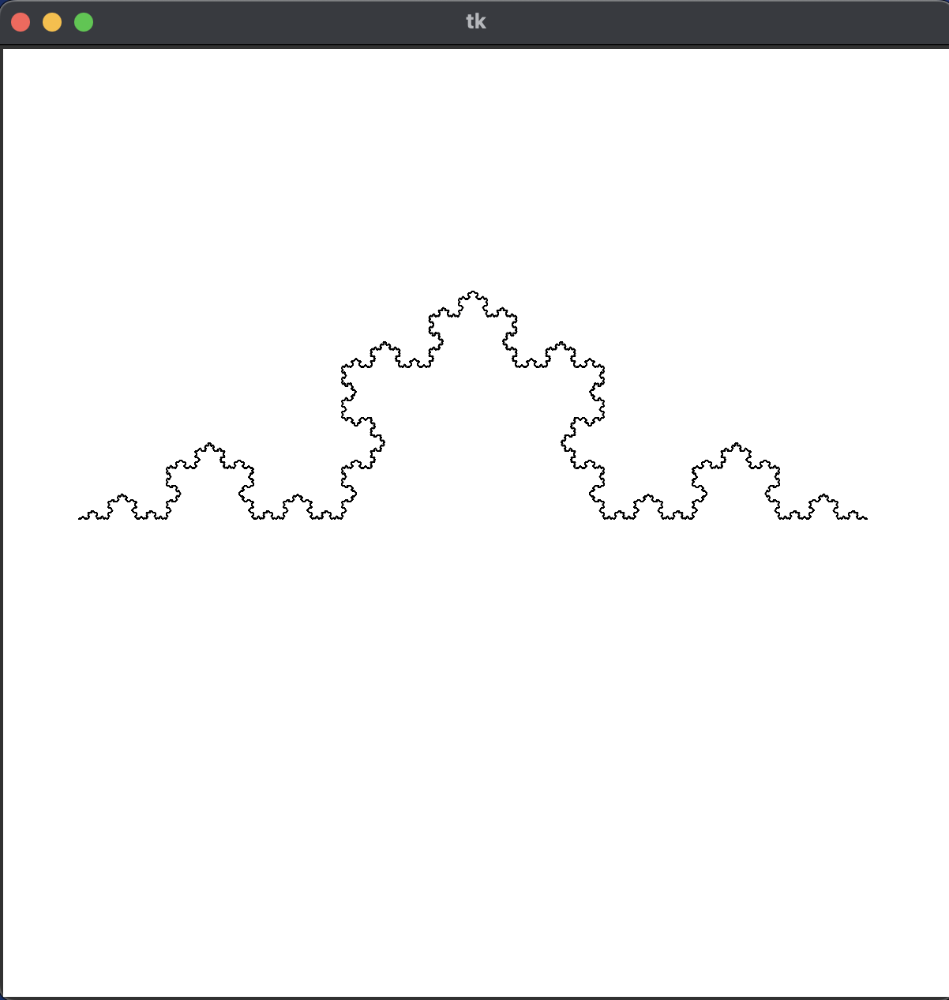
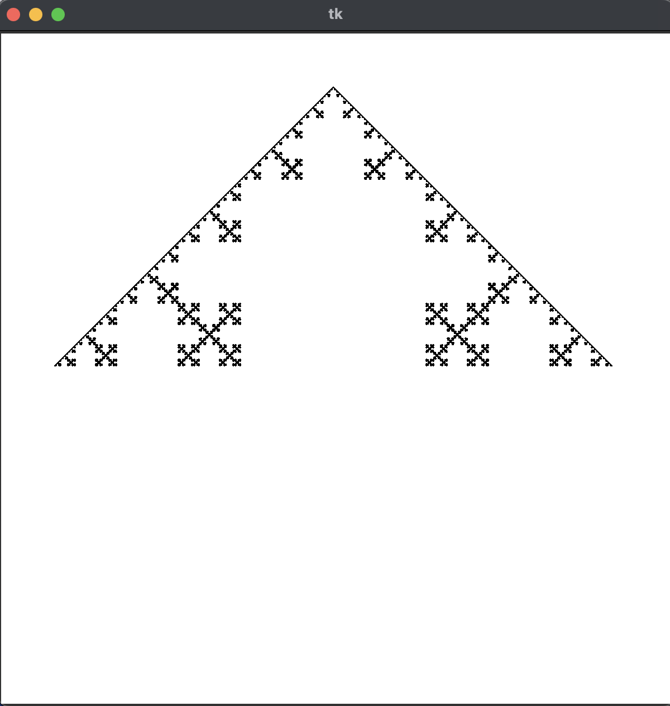
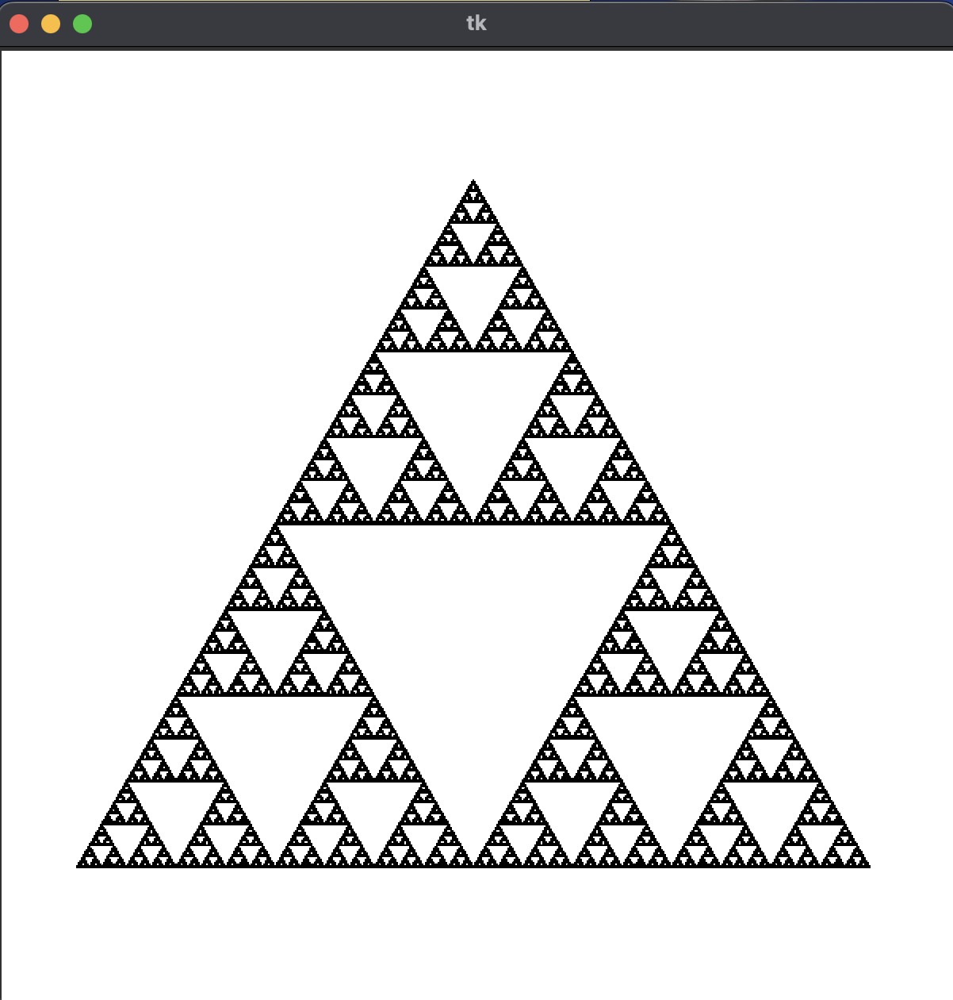
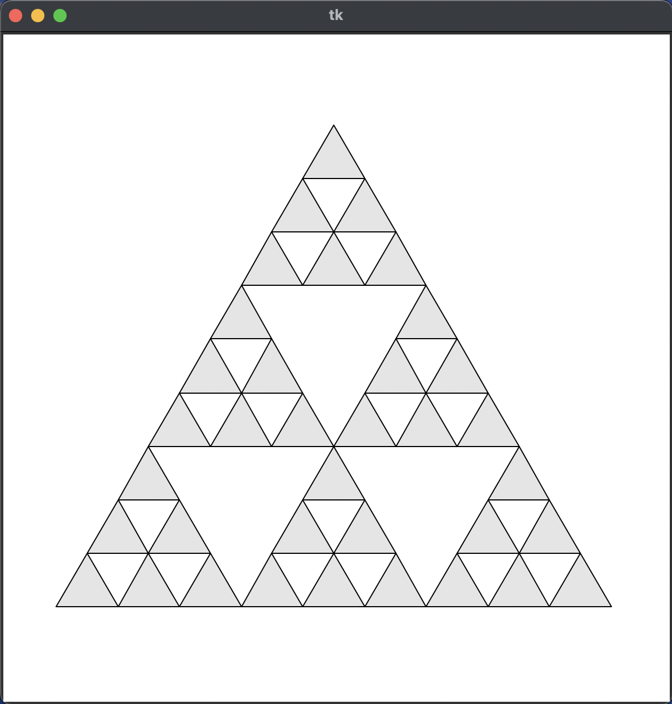
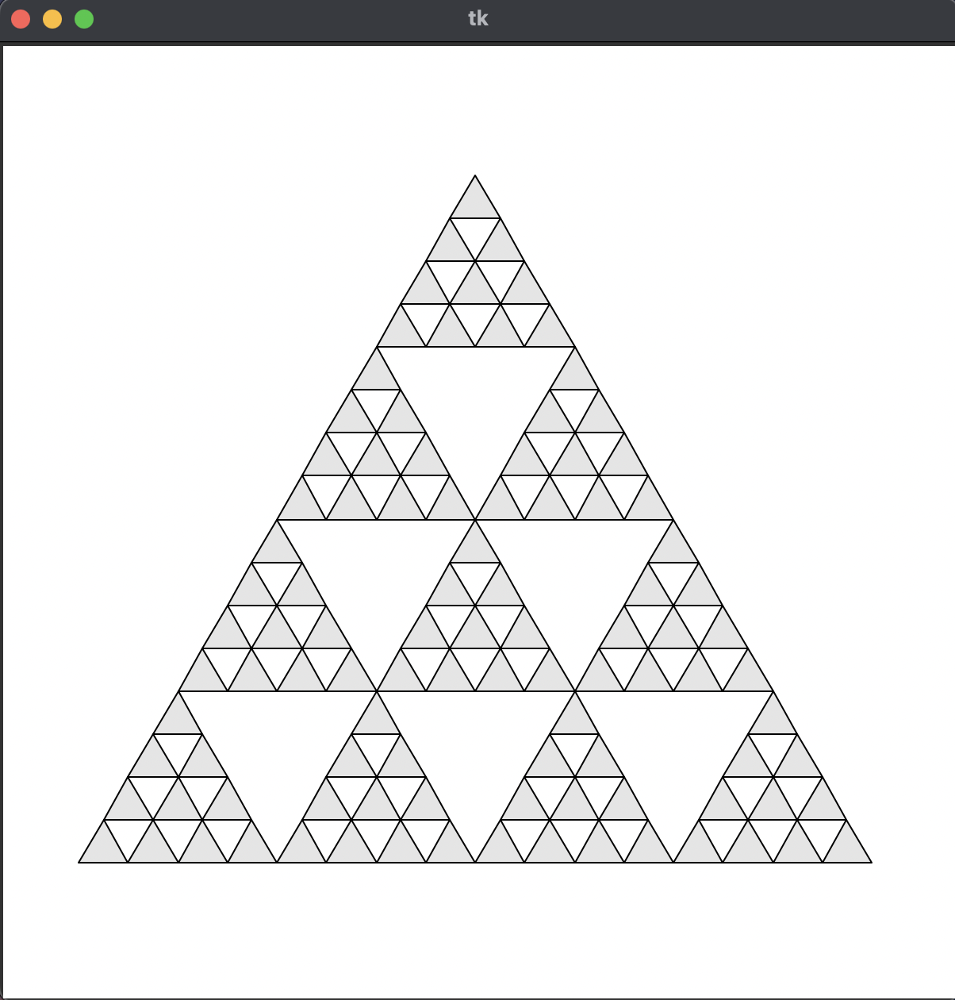
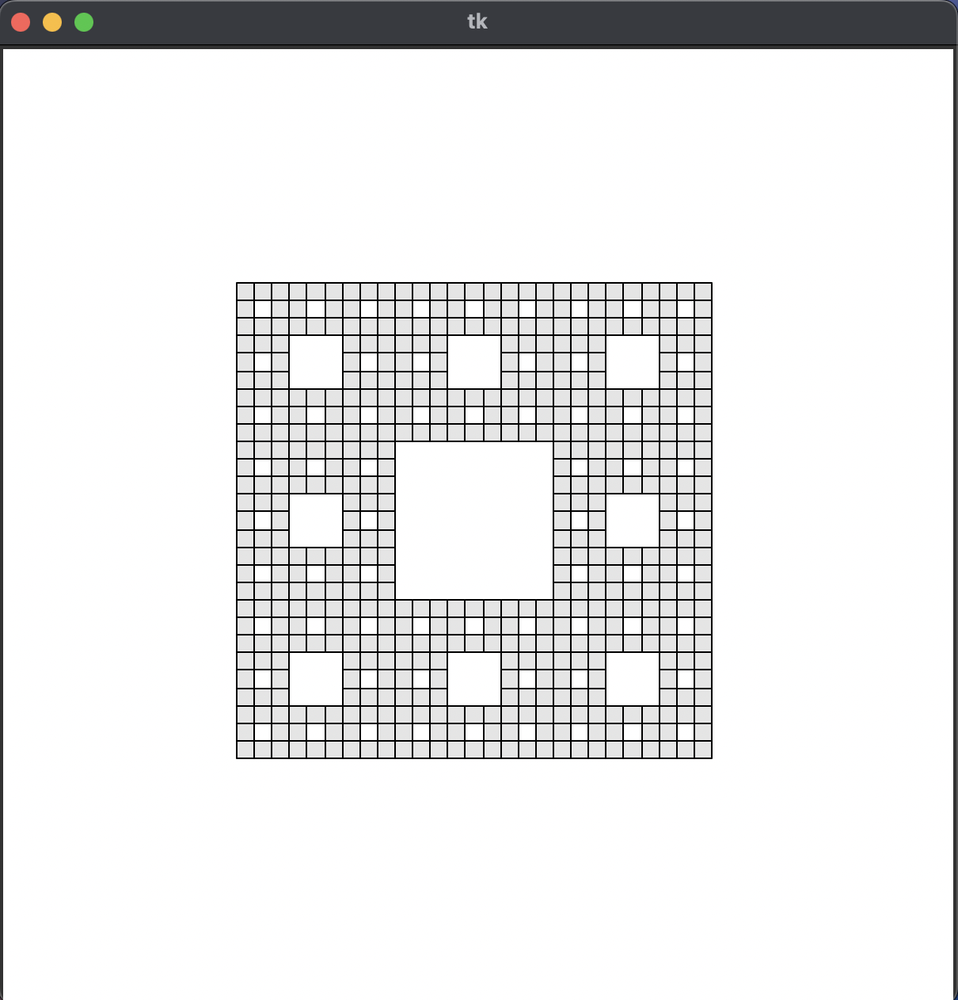
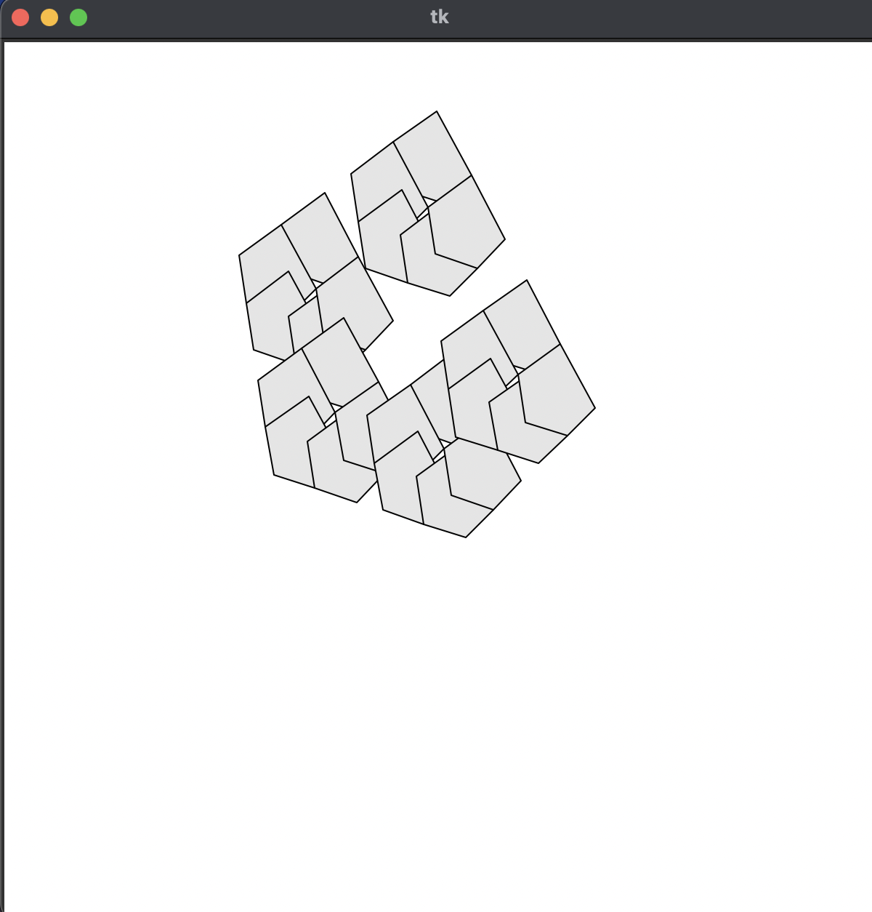

フラクタル図形 (第 6 回)
| 氏名 | 入佐 啓士
|
|---|
| クラス | 理科 1 類 37 組
|
|---|
| 学生証番号 | J4-220897
|
|---|
□課題6.0 - 6.2節 例 2: コッホ曲線 koch.py
○プログラムリスト
1 import math
2 import numpy as np
3 from vectorMatrix import rotMatrix, scaleMatrix
4 from myCanvas import MyCanvas
5 from fractal import Fractal
6
7
8 class Koch(Fractal):
9 def __init__(self, canvas):
10 base = [np.array((0, 0)), np.array((1, 0))]
11 mats = [scaleMatrix(1/3)]
12 mats.append(scaleMatrix(1/3).dot(rotMatrix(math.pi/3)))
13 mats.append(scaleMatrix(1/3).dot(rotMatrix(-math.pi/3)))
14 mats.append(scaleMatrix(1/3))
15 vecs = [base[0]]
16 vecs.append(mats[0].dot(base[1]) + vecs[0])
17 vecs.append(mats[1].dot(base[1]) + vecs[1])
18 vecs.append(mats[2].dot(base[1]) + vecs[2])
19 super().__init__(canvas, base, mats, vecs)
20
21 def drawObject(self, pnts):
22 self.canvas.drawPolyline(pnts)
23
24
25 def main():
26 canvas = MyCanvas(xo=50, r=1.2)
27 Koch(canvas).drawFractal()
28 canvas.mainloop()
29
30
31 if __name__ == '__main__':
32 main()
○実行コマンド
$ python koch.py 6
○実行結果
(文字列の表示なし)

○考察
今回は、1本の線分を3等分し、中央の3分の1を除去して正三角形の2辺を加える操作を反復して行いコッホ曲線を描画するプログラムを走らせた。
15行目-18行目では1個前のベクトルに、base[1]を1/3倍して回転させた行列を加算して次の点のベクトルを決めている。そしてdrawObjectメソッドではFractalクラスのdrawFractalメソッドで受け取った2つのベクトルを元にdrawPolylineメソッドで線分を描画している
実行結果は画像の通りで、baseとなった2つのベクトルを結ぶ直線からミョウバンの結晶ができたような形が描画された。フラクタル図形の中でも基本図形の形が残りやすい印象がある。次のセクションでは考察として正三角形以外のコッホ曲線を描画してみようと思う。
□課題6.0 - 6.2節 例 2-2: 四角形のコッホ曲線 koch2.py
○プログラムリスト
1 import math
2 import numpy as np
3 from vectorMatrix import rotMatrix, scaleMatrix
4 from myCanvas import MyCanvas
5 from fractal import Fractal
6
7
8 class Koch(Fractal):
9 def __init__(self, canvas):
10 base = [np.array((0, 0)), np.array((1, 0))]
11 mats = [scaleMatrix(1/3)]
12 mats.append(scaleMatrix(1/3).dot(rotMatrix(math.pi/2))) # 回転角を90度に変更
13 mats.append(scaleMatrix(1/3))
14 mats.append(scaleMatrix(1/3).dot(rotMatrix(-math.pi/2))) # 回転角を90度に変更
15 mats.append(scaleMatrix(1/3))
16 vecs = [base[0]] # vecs[0]
17 vecs.append(mats[0].dot(base[1]) + vecs[0]) # vecs[1]
18 vecs.append(mats[1].dot(base[1]) + vecs[1]) # vecs[2]
19 vecs.append(mats[2].dot(base[1]) + vecs[2]) # vecs[3]
20 vecs.append(mats[3].dot(base[1]) + vecs[3]) # vecs[4]
21 super().__init__(canvas, base, mats, vecs)
22
23 def drawObject(self, pnts):
24 self.canvas.drawPolyline(pnts)
25
26
27 def main():
28 canvas = MyCanvas(xo=50, r=1.2)
29 Koch(canvas).drawFractal()
30 canvas.mainloop()
31
32
33 if __name__ == '__main__':
34 main()
○実行コマンド
$ python koch2.py 6
○実行結果
(文字列の表示なし)

○考察
今回は1本の線分を3等分し、中央の3分の1を除去して正方形の3辺を追加する操作を反復してコッホ曲線を描画するプログラムを走らせた。
例題2のプログラムの行列の部分を11-15行目のようにpi/2回転させる行列に変化させ、17-20行目のようにベクトルを追加すれば一つの線分の中央に正方形を追加した形になると考えた。
実行結果は画像のようで、ピラミッドのような形が得られた。ピラミッドの内側に雪の結晶のようなものが見えて綺麗だった。例題2-1と違って元の基本図形の原型を留めていないのは、正方形の四辺にそれぞれ反復処理を施すと、四方向に広がるからだと考えた。
□課題6.0 - 6.2節 例 3: シェルピンスキー三角形 sierpinski.py
○プログラムリスト
(例題なので省略)
○実行コマンド
$ python sirpinski.py 12
○実行結果
(文字列の表示なし)

○考察
今回は、三角形の各辺を2等分して、全体を4つの三角形としそのうち中央の三角形を取り除く操作を反復してできるシェルピンスキー三角形を描画するプログラムを走らせた。
Fractal抽象クラスのdrawFractalメソッド内で反復制御を行い、変換と並行移動を施したpointsを子クラスのsirpinskiのdrawobjectメソッドに受け渡し、フラクタル図形を描画している。
実行結果は画像の通りで、一定以上拡大すると画素が荒くて見えないが、自己相似性が確認できる。
□課題6.0 - 章末課題 1: ドラゴン曲線のプログラム dragon.py
○プログラムリスト
(正しく動作しませんでした。)
1 import math
2 import numpy as np
3 from vectorMatrix import rotMatrix, scaleMatrix
4 from myCanvas import MyCanvas
5 from fractal import Fractal
6
7
8 class Dragon(Fractal):
9 def __init__(self, canvas):
10 base = [np.array((0, 0)), np.array((1, 0))]
11 mats = [
12 scaleMatrix(1/math.sqrt(2)).dot(rotMatrix(math.pi/4)),
13 scaleMatrix(1/math.sqrt(2)).dot(rotMatrix(-math.pi/4))
14 ]
15 vecs = [base[0]] # index0
16 vecs.append(mats[0].dot(base[1]) + vecs[0]) # index1
17 super().__init__(canvas, base, mats, vecs)
18
19 def drawObject(self, pnts):
20 self.canvas.drawPolyline(pnts)
21
22 def drawFractal(self, iterations=-1, mat=np.array(((1, 0), (0, 1))), vec=np.array((0, 0))):
23 if iterations < 0:
24 iterations = self.times
25 if iterations > 0:
26 if iterations == self.times:
27 # ループを1回だけ回す
28 i = 0
29 self.drawFractal(iterations - 1, mat.dot(self.mats[i]), mat.dot(self.vecs[i]) + vec)
30 # ベクトル行列を入れ替えてもう一度ループを回すことで、90度回転した図形が得られると考えて
31 new_mats = [
32 scaleMatrix(1/math.sqrt(2)).dot(rotMatrix(-math.pi/4)),
33 scaleMatrix(1/math.sqrt(2)).dot(rotMatrix(math.pi/4))
34 ]
35 new_vecs = []
36 new_vecs.append(np.array((0, 0)))
37 new_vecs.append(new_mats[0].dot(np.array((1, 0))) + new_vecs[0])
38 self.mats = new_mats
39 self.vecs = new_vecs
40 self.drawFractal(iterations - 1, mat.dot(self.mats[0]), mat.dot(self.vecs[0]) + vec)
41 else:
42 for i in range(len(self.mats)):
43 self.drawFractal(iterations - 1, mat.dot(self.mats[i]), mat.dot(self.vecs[i]) + vec)
44 else:
45 points = []
46 for i in range(len(self.base)):
47 points.append(mat.dot(self.base[i]) + vec)
48 self.drawObject(points)
49
50
51
52 def main():
53 canvas = MyCanvas(xo=50, r=1.2)
54 Dragon(canvas).drawFractal()
55 canvas.mainloop()
56
57
58 if __name__ == '__main__':
59 main()
○実行コマンド
$
○実行結果
(正しく動作しませんでした。)

○考察
今回はコッホ曲線を応用してフラクタル図形であるドラゴン曲線を描画するプログラムを走らせたかったが、考えを関数に落とし込むことができなかった
最初の考えは、Figure 6.1のドラゴン曲線の例からドラゴン曲線は、辺の長さが1/2倍になる、そして回転角はpi/4だが、その正負が互い違いになっていると推測し、それを満たすプログラムを作成しようとしたが、Dragonメソッドのコンストラクタで交互する条件はつけられなかったため、親クラスのdrawFractalメソッドをオーバーライドしようとしたがうまくいかなかった。
次の考えは、奇数個めの繰り返し単位と偶数個めをboolによって判別して行列を入れ替えるというものだったが、うまくいかなかった。
最後はドラゴン曲線の図形が中心から左の部分の図形を90度反時計回りに入れ替えた図形を足し合わせるとドラゴン曲線になることに気づき、一回めの繰り返しの際に半分だけ描画して、それが終了すると残り半分を行列ベクトルを変えてループを回すと90度回転できると考えたが、うまくプログラムに書けなかった。
ハウスドルフ次元は、スケールが大きくなるにつれ周囲長が大きくなるので、2に近い数字だと推測する。
□課題6.0 - 章末課題 2: 様々なフラクタル図形 パスカル三角形(mod3) pascal3.py
○プログラムリスト
1 import math
2 import numpy as np
3 from vectorMatrix import scaleMatrix
4 from myCanvas import MyCanvas
5 from fractal import Fractal
6
7
8 class Pascal3(Fractal):
9 def __init__(self, canvas):
10 base = [np.array((0, 0)), np.array((-1, -3**0.5)), np.array((1, -3**0.5))]
11 mats = [scaleMatrix(1/3)]
12 mats.append(scaleMatrix(1/3))
13 mats.append(scaleMatrix(1/3))
14 mats.append(scaleMatrix(1/3))
15 mats.append(scaleMatrix(1/3))
16 mats.append(scaleMatrix(1/3))
17 vecs = [base[0]] # index0
18 vecs.append(mats[0].dot(base[1]) + vecs[0]) # index1
19 vecs.append(mats[1].dot(base[2]) + vecs[0]) # index2
20 vecs.append(mats[2].dot(base[1]) + vecs[1]) # index3
21 vecs.append(mats[3].dot(base[2]) + vecs[1]) # index4
22 vecs.append(mats[4].dot(base[2]) + vecs[2]) # index5
23 super().__init__(canvas, base, mats, vecs)
24
25 def drawObject(self, pnts):
26 self.canvas.drawPolygon(pnts)
27
28
29 def main():
30 canvas = MyCanvas(yo=84, r=2.4)
31 Pascal3(canvas).drawFractal()
32 canvas.mainloop()
33
34
35 if __name__ == '__main__':
36 main()
○実行コマンド
$ python pascal3.py 2
○実行結果
(文字列の表示なし)

○考察
今回はシェルピンスキー三角形を参考にして、三角形の各辺を3等分して全体を9つの三角形とし、そのうち中央の三角形を取り除くというステップを頒布することで、パスカルの三角形(mod3)を描画するプログラムを走らせた。
sirpinski.pyから、matsとvecsは同じ数であり、vecsには1ステップで同じ処理を繰り返す単位数(今回の場合は6頂点を選んでその頂点から次のステップを反復するので6)の頂点のベクトルを追加すれば、シェルピンスキー三角形のようにフラクタル図形が描けると推測した。
実行結果は画像の通りでシェルピンスキー三角形と基本構造は同じだが、分割される数が多いフラクタル図形が期待通り得られた。ハウスドルフ次元について考えると、スケールが3倍になると周囲長は6倍になるのでlog3(6)=1.63092となり、シェルピンスキー三角形に近い値となった。形状としては単なる直線ではなく、より多くの空間を占めているが、完全な面を持っているわけではないことがわかる。
□課題6.0 - 章末課題 2: 様々なフラクタル図形 パスカル三角形(mod4) pascal4.py
○プログラムリスト
1 import math
2 import numpy as np
3 from vectorMatrix import scaleMatrix
4 from myCanvas import MyCanvas
5 from fractal import Fractal
6
7
8 class Pascal4(Fractal):
9 def __init__(self, canvas):
10 base = [np.array((0, 0)), np.array((-1, -3**0.5)), np.array((1, -3**0.5))]
11 mats = [scaleMatrix(1/4)]
12 mats.append(scaleMatrix(1/4))
13 mats.append(scaleMatrix(1/4))
14 mats.append(scaleMatrix(1/4))
15 mats.append(scaleMatrix(1/4))
16 mats.append(scaleMatrix(1/4))
17 mats.append(scaleMatrix(1/4))
18 mats.append(scaleMatrix(1/4))
19 mats.append(scaleMatrix(1/4))
20 mats.append(scaleMatrix(1/4))
21 vecs = [base[0]] # index0
22 vecs.append(mats[0].dot(base[1]) + vecs[0]) # index1
23 vecs.append(mats[1].dot(base[2]) + vecs[0]) # index2
24 vecs.append(mats[2].dot(base[1]) + vecs[1]) # index3
25 vecs.append(mats[3].dot(base[2]) + vecs[1]) # index4
26 vecs.append(mats[4].dot(base[2]) + vecs[2]) # index5
27 vecs.append(mats[5].dot(base[1]) + vecs[3]) # index6
28 vecs.append(mats[6].dot(base[2]) + vecs[3]) # index7
29 vecs.append(mats[7].dot(base[2]) + vecs[4]) # index8
30 vecs.append(mats[8].dot(base[2]) + vecs[5]) # index9
31 super().__init__(canvas, base, mats, vecs)
32
33 def drawObject(self, pnts):
34 self.canvas.drawPolygon(pnts)
35
36
37 def main():
38 canvas = MyCanvas(yo=84, r=2.4)
39 Pascal4(canvas).drawFractal()
40 canvas.mainloop()
41
42
43 if __name__ == '__main__':
44 main()
○実行コマンド
$ python pascal4.py 2
○実行結果
(文字列の表示なし)

○考察
今回は、三角形の各辺を4等分して全体を16この三角形とし、そのうち中央の三角形を取り除くというステップを頒布することで、パスカルの三角形(mod4)を描画するプログラムを走らせた。
1ステップの繰り返し単位として10この頂点のベクトルを設定すればパスカルの三角形(mod4)が描けると推測した。
実行結果は画像の通りで、期待通りシェルピンスキー三角形と似た構造の図形が得られた。そのため、ハウスドルフ次元としてはmod3の場合よりは複雑性は増しているが、2次元にはならない約1.7次元ほどと推測した。計算してみると、スケールが4倍になると周囲長が10倍になるのでn=log4(10)=1.66096であり、確かにmod3より大きくはなったがmod2からmod3の上がり幅に比べると小さくなっている。そのためmodの値を増やしていってもある値に収束していくと考える。
□課題6.0 - 章末課題 2: 様々なフラクタル図形 シェルピンスキーカーペット sirpinskiCarpet.py
○プログラムリスト
1 import math
2 import numpy as np
3 from vectorMatrix import scaleMatrix
4 from myCanvas import MyCanvas
5 from fractal import Fractal
6
7
8 class SirpinskiCarpet(Fractal):
9 def __init__(self, canvas):
10 base = [np.array((0, 0)), np.array((1, 0)), np.array((1, -1)), np.array((0, -1))]
11 mats = [scaleMatrix(1/3)]
12 mats.append(scaleMatrix(1/3))
13 mats.append(scaleMatrix(1/3))
14 mats.append(scaleMatrix(1/3))
15 mats.append(scaleMatrix(1/3))
16 mats.append(scaleMatrix(1/3))
17 mats.append(scaleMatrix(1/3))
18 mats.append(scaleMatrix(1/3))
19 vecs = [base[0]] # index0
20 vecs.append(mats[0].dot(base[1]) + vecs[0]) # index1
21 vecs.append(mats[1].dot(base[1]) + vecs[1]) # index2
22 vecs.append(mats[2].dot(base[3]) + vecs[0]) # index3
23 vecs.append(mats[3].dot(base[3]) + vecs[2]) # index4
24 vecs.append(mats[4].dot(base[3]) + vecs[3]) # index5
25 vecs.append(mats[5].dot(base[1]) + vecs[5]) # index6
26 vecs.append(mats[6].dot(base[1]) + vecs[6]) # index7
27 super().__init__(canvas, base, mats, vecs)
28
29 def drawObject(self, pnts):
30 self.canvas.drawPolygon(pnts)
31
32
33 def main():
34 canvas = MyCanvas(xo=150, yo=150)
35 SirpinskiCarpet(canvas).drawFractal()
36 canvas.mainloop()
37
38
39 if __name__ == '__main__':
40 main()
○実行コマンド
$ python sirpinskiCarpet.py 3
○実行結果
(文字列の表示なし)

○考察
今回は、正方形の各辺を3等分して、全体を9つの正方形に分割したのち中心の正方形を取り除くというステップを反復的に繰り返して、シェルピンスキカーペットというフラクタル図形を描画するプログラムを走らせた。
(0,0),(1,0),(0,-1)のベクトルによって、全ての点に移動でき、繰り返し単位として8この点のベクトルを指定して反復すれば期待通りの結果が得られると考えた。この時、drawObjectに渡すの順番に注意しないと、正方形が得られず砂時計型になってしまうことがあったので注意が必要だった。またグローバル座標系の原点を見やすいように左上にした。
実行結果は画像の通りで、中心に穴が空いた正方形が反復的に現れる図形だった。ハウスドルフ次元については、スケールが3倍になると、周囲長が4倍になるのでn=log3(4)=1.26186でコッホ曲線と同じになった。反復処理をしてもあまり元の図形からは変わらないということがわかる。
□課題6.0 - 章末課題 2: 様々なフラクタル図形 五角形片 pentagon.py
○プログラムリスト
(正しく動作しませんでした。)
1 import math
2 import numpy as np
3 from vectorMatrix import scaleMatrix, rotMatrix
4 from myCanvas import MyCanvas
5 from fractal import Fractal
6
7
8 class Pentagon(Fractal):
9 def __init__(self, canvas):
10 center = np.array((0, -1))
11 rotation_angle = -(3/2)*math.pi/5
12 base = [np.array((0,0))] # index0
13 base.append(np.array(rotMatrix(rotation_angle).dot(center - base[0])) + base[0]) # index1
14 base.append(np.array(rotMatrix(rotation_angle).dot(center - base[1])) + base[1]) # index2
15 base.append(np.array(rotMatrix(rotation_angle).dot(center - base[2])) + base[2]) # index3
16 base.append(np.array(rotMatrix(rotation_angle).dot(center - base[3])) + base[3]) # index4
17 si = (1 + 5**(1/2))/2
18 mats = [scaleMatrix(1/(si**2))]
19 mats.append(scaleMatrix(1/si**2))
20 mats.append(scaleMatrix(1/si**2))
21 mats.append(scaleMatrix(1/si**2))
22 mats.append(scaleMatrix(1/si**2))
23 vecs = [base[0]] # index0
24 vecs.append(mats[0].dot(base[1]) + vecs[0]) # index1
25 vecs.append(mats[1].dot(base[2]) + vecs[0]) # index2
26 vecs.append(mats[2].dot(base[3]) + vecs[0]) # index3
27 vecs.append(mats[3].dot(base[4]) + vecs[0]) # index4
28 super().__init__(canvas, base, mats, vecs)
29
30 def drawObject(self, pnts):
31 self.canvas.drawPolygon(pnts)
32
33
34 def main():
35 canvas = MyCanvas(yo=50, r=2.4)
36 Pentagon(canvas).drawFractal()
37 canvas.mainloop()
38
39
40 if __name__ == '__main__':
41 main()
○実行コマンド
$ python pentagon.py 2
○実行結果
(文字列の表示なし)

○考察
今回は正五角形の各頂点を新しい正五角形の頂点としてもち、5つの五角形を作り、囲まれた部分に新たな正五角形、合計6つの正五角形を1ステップで作り反復して五角形片を描くプログラムを作成しようとしてが、うまく動作しなかった。
考えとして、baseの正五角形は一つの頂点に(1.5pi/5)回転行列をかけて表現しようとしたが、結果は画像のような歪んだ五角形の形になってしまった。
□課題や授業に関して
○レポート作成に要した時間
9時間
○特に苦労した点
ドラゴン曲線を描画するプログラムの書き方が分からず、止まってしまった。反復中にベクトルの向きを入れ替える方法が調べてもわかりませんでした。
○授業についての感想や希望
今回の課題はとても難しくて解けませんでした。調べても分からない問題を解決したいので、課題の提出時期が過ぎたら解答と考え方を知りたいです。